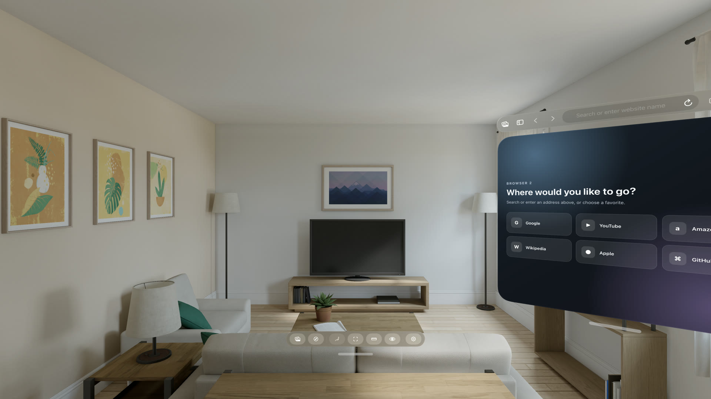
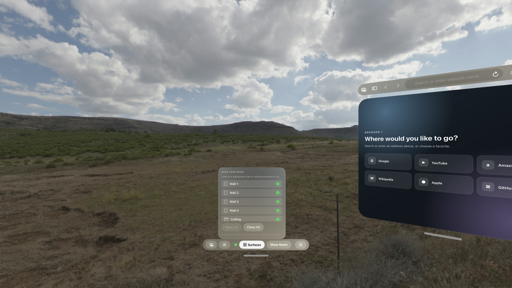
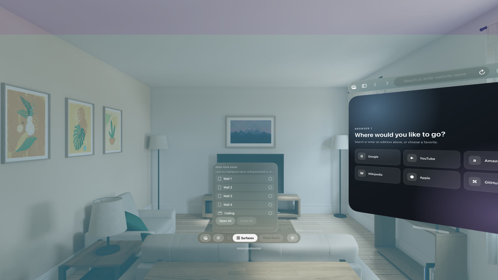
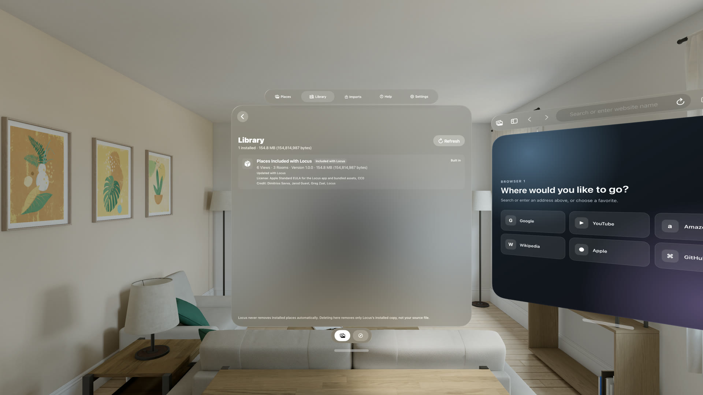

Virtual Space
Architecture around you. Your desk stays real.
Work from an authored Room, calibrate its desk to yours, and choose a View beyond the windows.
Locus brings calm immersive Views, architectural Rooms, the web pages you need, and your real desk into one spatial workspace.
Pre-release: Locus is in active V1 development and is not currently available for purchase.


Virtual Space
Work from an authored Room, calibrate its desk to yours, and choose a View beyond the windows.

Room Portal
A mixed-space mode keeps the real room present while replacing one chosen wall with a destination.

Spatial browser
Open multiple browser windows, keep tabs together, and return to the workspace you left.
Make it yours
Views import directly from a complete 2:1 JPEG, PNG, or HEIC image. Rooms use a documented .locusplace or ZIP package with a USDZ, integrity hashes, and a local validator.

Clear boundaries
Locus uses visionOS spatial tracking to position content. Physical comfort, awareness, tracking, and Room Portal behavior still depend on Apple Vision Pro and the space around you. Experimental workflows are labeled and never required.